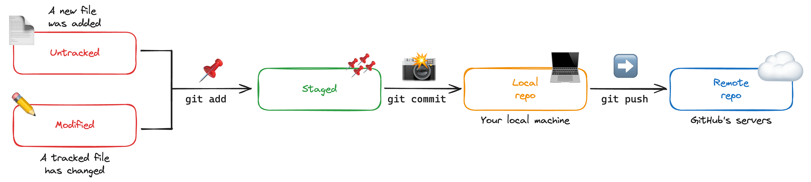
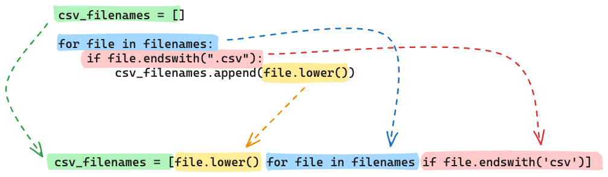
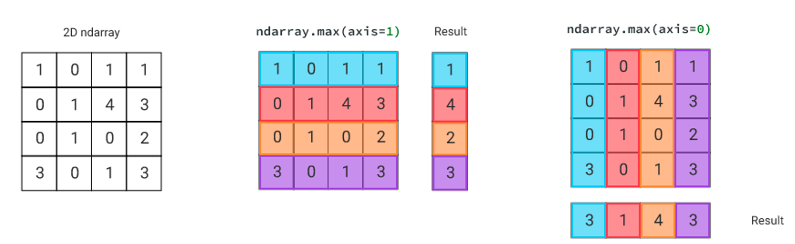

Python Reboot
Réviser les fondamentaux Python (CLI, Git, types de données, structures de contrôle, fonctions) et les bibliothèques essentielles pour la data science : NumPy, Pandas et Matplotlib/Seaborn.
Réviser les fondamentaux Python (CLI, Git, types de données, structures de contrôle, fonctions) et les bibliothèques essentielles pour la data science : NumPy, Pandas et Matplotlib/Seaborn.
🧠 Bilan de révision — Session du 13 mars 2026
| Question | Résultat | Point clé à retenir |
|---|---|---|
| Interpréter β₁ logistique (fare) | ⚠️ Partiel | β₁ = variation de log-odds, pas de probabilité. Toujours passer par exp(β) → odds ratio |
| QCM : intercept logistique → taux de survie | ❌ Piège log-odds | log-odds = -0.47 → odds = exp(-0.47) = 0.62 → p = 0.62/1.62 = 38% |
| Debug VIF | ⚠️ Partiel | L'erreur était l'absence de scaling avant le calcul du VIF, pas la dernière ligne |
| Interpréter β₁ linéaire + R² | ✅ Bien | Ajouter "en moyenne" + vérifier les résidus avant de conclure sur les p-values |
🔴 Points prioritaires à retravailler
La chaîne log-odds → odds → probabilité (régression logistique) : β ne s'interprète jamais directement comme une probabilité.
L'interprétation de la p-value : la p-value = P(données aussi extrêmes | H₀ vraie). Elle ne mesure PAS la probabilité que H₀ soit vraie, ni celle que l'effet soit réel.
| Question | Résultat | Point clé à retenir | |
|---|---|---|---|
| QCM p-value (Statistical Inference) | ❌ Piège classique | p-value ≠ probabilité que H₀ soit vraie. C'est P(données | H₀). Raisonne toujours sous H₀ |
📋 Cheatsheet — Python Reboot
CLI & Git
pwd # Affiche le répertoire courant
ls / l / la # Liste le contenu du dossier
tree # Affiche l'arborescence
cd .. # Remonte d'un niveau
cd ~ # Va au dossier home
cd some-folder # Entre dans un sous-dossier
git status # Vérifie l'état du repo
git add file # Ajoute un fichier au staging
git commit -m "message" # Crée un commit
git push origin master # Pousse les commits vers GitHubimport os
os.getcwd() # Équivalent de pwd
os.chdir('../folder') # Équivalent de cd ../folderTypes Python & structures
## Multiplication de strings et listes
"42" * 2 # ✅ retourne '4242'
[42] * 2 # ✅ retourne [42, 42]
## Accès par index
c = [21, 42, 84]
c[1] # ✅ retourne 42
## Accès dict
d = {'a': 21, 'b': 42}
d['b'] # ✅ retourne 42
## Itération sur dict
for user, pwd in passwords.items(): # dépacke les tuples (clé, valeur)
print(f"{user} - {pwd}")
## List comprehension
[f.lower() for f in files if f.endswith('csv')] # ✅ filtre + transformationFonctions
## Bonne pratique : utiliser return, pas print
def get_pwd(user):
return passwords.get(user, "Not found") # retourne la valeur ou le défaut
## Piège classique : les variables locales ne modifient pas les globales
user = " Pauline "
user = clean_user(user) # ✅ réassigner pour que la modification soit effectiveNumPy
import numpy as np
data_np = np.array(data_list) # crée un array 2D depuis une liste de listes
data_np.shape # retourne (n_rows, n_cols)
data_np[1] # sélectionne la ligne 2 (index 1)
data_np[:, 2] # sélectionne la colonne 3
data_np[2, 1:-1] # ligne 3, colonnes 2 à avant-dernière
data_np[:, 1] + data_np[:, 2] # addition de colonnes élément par élément
data_np.sum(axis=0) # somme par colonne (axe 0 = lignes empilées)
data_np.sum(axis=1) # somme par ligne (axe 1 = colonnes empilées)
data_np + 1 # broadcasting : ajoute 1 à chaque élémentPandas
import pandas as pd
df = pd.DataFrame(data) # crée un DataFrame depuis un dict
df.set_index('id') # sans inplace : ne modifie pas df
df = df.set_index('id') # ✅ réassigner pour que ça soit effectif
df['username'] # retourne une Series
df[['username']] # retourne un DataFrame (double crochet)
df[0:1] # sélection de lignes par position (slice)
df.iloc[0:1] # sélection par position (entier)
df.loc[101:102] # sélection par label d'index
df.iloc[0, 2] # cellule position [ligne, col]
df.loc[:103, ['username']] # lignes jusqu'à 103, colonne username
mask = df['gender'] == 'M' # crée un masque booléen
df[mask] # filtre le DataFrame avec le masque
df[df['gender'] == 'M'] # identique, en une ligne
df['username'].str.strip() # supprime les espaces autour des strings
df['username'].str.capitalize() # met en majuscule la 1ère lettre
df['col'] = df['input'].apply(fn) # applique une fonction Python sur une colonne (lent !)
df['col'] = df['input'] ** 2 # ✅ préférer les opérations vectorisées (rapide)
df.head() # affiche les 5 premières lignes
df.shape # retourne (n_lignes, n_colonnes)
df.info() # types, valeurs non-nulles
df.dtypes # types de chaque colonne
df.isnull().sum() # nombre de valeurs nulles par colonne
df.describe() # statistiques descriptives
df.groupby('day').sum() # agrégation par groupe
df.groupby('day').sum().sort_values(by='col') # tri après agrégation
df.groupby('day').sum()[['total_bill']].plot(kind='bar') # graphe en barresVisualisation
import matplotlib.pyplot as plt
import seaborn as sns
sns.scatterplot(data=df, x='total_bill', y='tip') # nuage de points
sns.scatterplot(data=df, x='total_bill', y='tip', hue='sex') # avec couleur par catégorie
plt.plot((x1, x2), (y1, y2), color='red') # ligne rouge sur le graphe
sns.barplot(data=df, x='smoker', y='tip', hue='sex') # barres par catégorie
sns.histplot(data=df, x='tip') # histogramme
sns.boxplot(data=df, y='tip', x='smoker') # boîte à moustaches
sns.violinplot(data=df, y='tip', x='smoker') # violin plot
fig, (ax1, ax2) = plt.subplots(1, 2, figsize=(15, 5)) # 2 graphes côte à côte
sns.histplot(data=df, x='total_bill', ax=ax1) # assigner à ax1
sns.histplot(data=df, x='tip', ax=ax2) # assigner à ax2⚠️ Récapitulatif — Erreurs clés à éviter
[!CAUTION]
Oublier de réassigner après une opération non-inplace
❌
df.set_index('id')→ ne modifie pasdf
✅
df = df.set_index('id')→ réassigne le résultat
[!CAUTION]
Confondre Series et DataFrame lors de la sélection de colonnes
❌
df['username']→ retourne une Series
✅
df[['username']]→ retourne un DataFrame (nécessaire pour certaines opérations)
[!CAUTION]
Utiliser
.apply()pour des opérations numériques simples
❌
df['col'] = df['input'].apply(lambda x: x**2)→ très lent
✅
df['col'] = df['input'] ** 2→ vectorisé, rapide
[!CAUTION]
Croire que modifier une variable locale modifie la variable globale
❌
clean_user(user)→userreste inchangé
✅
user = clean_user(user)→ réassigner explicitement
[!CAUTION]
Confondre axis=0 et axis=1 dans NumPy/Pandas
❌
data_np.sum(axis=0)si on veut la somme par ligne
✅
axis=0= opération sur les lignes (résultat par colonne) |axis=1= opération sur les colonnes (résultat par ligne)
1) CLI et Git Essentials
1.1 Navigation dans le terminal
pwd # Où suis-je ? → /Users/username/code/...
ls # Qu'est-ce qu'il y a ici ? (niveau courant)
l # Alias court de ls -l
la # Alias court de ls -la (incluant fichiers cachés)
tree # Arborescence complète du dossier
cd .. # Remonter d'un niveau
cd ../.. # Remonter de deux niveaux
cd ~ # Aller au dossier home
cd / # Aller à la racine
cd some-folder # Entrer dans un sous-dossier
cd ../folder # Aller dans un dossier voisinimport os
os.getcwd() # Équivalent Python de pwd
os.chdir('../folder') # Équivalent Python de cd ../folderStructure typique d'un projet Le Wagon :
/
├── Users
│ └── username
│ ├── code
│ │ └── githubusername
│ │ ├── 01-Python
│ │ ├── 02-Data-Toolkit
│ │ └── your-project
│ ├── Documents
│ └── Downloads
└── Volumes1.2 Git essentials

Les 4 étapes essentielles :
git status # Voir l'état des fichiers
git add a_file another_file # Stager les fichiers modifiés
git commit -m "Here comes a MEANINGFUL message" # Créer un snapshot
git push origin master # Pousser vers GitHub## Travailler dans un notebook : commiter aussi le notebook !
git add some_test.pickle your_notebook.ipynb2) Python Essentials
2.1 Types de données
a = "42"
a * 2 # '4242' → la multiplication répète la string
b = [42]
b * 2 # [42, 42] → la multiplication répète la liste
c = [21, 42, 84]
c[1] # 42 → accès par index (0-based)
d = {'a': 21, 'b': 42, 'c': 84}
d['b'] # 42 → accès dict par clé2.2 Structures de contrôle
filenames = ["file_one.csv", "FILE_TWO.csv", ".keep"]
## Boucle + condition
csv_filenames = []
for file in filenames:
if file.endswith(".csv"):
csv_filenames.append(file.lower())
## Résultat : ['file_one.csv', 'file_two.csv']
## List comprehension équivalente (plus pythonique)
csv_filenames = [file.lower() for file in filenames if file.endswith('csv')]
2.3 Itération sur les dicts
passwords = {'Jean': '1234', 'Phil': 'pa$$word'}
'Jean' in passwords # True → vérifie si une clé existe
passwords.keys() # dict_keys(['Jean', 'Phil'])
passwords.values() # dict_values(['1234', 'pa$$word'])
## Dépackage des tuples (clé, valeur)
for user, password in passwords.items():
print(f"{user} - {password}")
## Jean - 1234
## Phil - pa$$word2.4 Fonctions
## Retourner une valeur vs. juste l'afficher
def get_pwd(user):
return passwords.get(user, "Not found") # ✅ retourne la valeur
phil_password = get_pwd("Phil") # 'pa$$word' → récupérable
## Piège : les variables locales ne modifient pas les globales
user = " Pauline "
def clean_user(user):
user = user.strip() # modifie la copie locale, pas la globale
return user
user = clean_user(user) # ✅ réassigner pour que la modif soit effective
## user → 'Pauline'3) NumPy Essentials
import numpy as np3.1 Création et shape
data_list = [
[ 0, 1, 2, 3, 4],
[10, 11, 12, 13, 14],
[20, 21, 22, 23, 24],
[30, 31, 32, 33, 34],
[40, 41, 42, 43, 44],
]
data_np = np.array(data_list) # crée un array 2D depuis liste de listes
data_np.shape # (5, 5) → (n_lignes, n_colonnes)3.2 Sélection / slicing
data_np[1] # ligne 2 → array([10, 11, 12, 13, 14])
data_np[:, 2] # colonne 3 → array([ 2, 12, 22, 32, 42])
data_np[2, 1:4] # ligne 3, colonnes 2 à 4 → array([21, 22, 23])
data_np[2, 1:-1] # ligne 3, de la col 2 à l'avant-dernière (plus robuste)
3.3 Opérations vectorisées
data_np[:, 1] + data_np[:, 2] # addition de deux colonnes → array([ 3, 23, 43, 63, 83])
data_np.sum(axis=1) # somme par ligne → array([ 10, 60, 110, 160, 210])
data_np + 1 # broadcasting : +1 sur chaque élément[!TIP]
Comprendre les axes :
axis=0opère sur les lignes (résultat par colonne),axis=1opère sur les colonnes (résultat par ligne).

4) Pandas Essentials
import pandas as pd4.1 Création et index
data = {
'id': [101, 102, 103, 104],
'username': [' Jean ', 'phil', ' mia ', 'Pauline'],
'password': ['1234', 'pa$$word', 'ri543&', 'fdf342'],
'birth_date': ['4/5/2008', '5/7/2000', '9/12/1988', '4/1/2004'],
'gender': ['M', 'M', 'W', 'W'],
}
df = pd.DataFrame(data)
df.set_index('id') # ⚠️ ne modifie PAS df (retourne une copie)
df = df.set_index('id') # ✅ réassigner pour que l'index soit modifié4.2 Sélection de colonnes
df['username'] # → Series (1D)
df[['username']] # → DataFrame (2D, double crochet)
type(df['username']), type(df[['username']])
## (pandas.core.series.Series, pandas.core.frame.DataFrame)4.3 Sélection de lignes
df[0:1] # slice par position → 1ère ligne
df.iloc[0:1] # sélection par position entière (integer location)
df.loc[101:102] # sélection par label d'index (inclus les deux bornes)4.4 Sélection lignes + colonnes
df.iloc[0, 2] # cellule position [ligne 0, col 2]
df.loc[:103, ['username', 'birth_date']] # lignes jusqu'à 103, colonnes nommées4.5 Filtrage booléen
mask = df['gender'] == 'M' # crée une Series de booléens
df[mask] # filtre → ne garde que les lignes True
df[df['gender'] == 'M'] # identique en une ligne4.6 Modification de colonnes
## Méthodes string
df['username'].str.strip() # supprime les espaces
df['username'].str.capitalize() # capitalise
## Chaîner les opérations
df['cleaned_username'] = df['username'].str.strip().str.capitalize()
## .apply() → pour des transformations complexes, mais lent
df['new_column'] = df['input_column'].apply(get_some_info)
## ⚠️ Éviter .apply() pour les opérations numériques simples
df['new'] = df['input'].apply(lambda x: x**2) # ❌ lent
df['new'] = df['input'] ** 2 # ✅ rapide (vectorisé)4.7 Datetimes
df['birth_date'] = pd.to_datetime(df['birth_date']) # convertit en datetime
from datetime import datetime
import numpy as np
df['age'] = (datetime.today() - df['birth_date']) / np.timedelta64(365, 'D')
## retourne l'âge en années (float)4.8 Exploration rapide (EDA)
df.head() # 5 premières lignes
df.shape # (244, 7) → dimensions
df.info() # types, valeurs non-nulles, mémoire
df.dtypes # type de chaque colonne
df.isnull().sum() # nombre de NaN par colonne
df.describe() # statistiques descriptives (count, mean, std, min, quartiles, max)4.9 Groupby, tri, visualisation rapide
df.groupby('day') # crée un objet GroupBy
df.groupby('day').sum() # agrège par somme
df.groupby('day').sum().sort_values(by='total_bill', ascending=False) # trier
## Graphe rapide (très pratique pour l'exploration)
df.groupby('day').sum()[['total_bill']] \
.sort_values(by='total_bill', ascending=False) \
.plot(kind='bar')5) Visualisation Essentials
import matplotlib.pyplot as plt
import seaborn as sns5.1 Relations
sns.scatterplot(data=df, x='total_bill', y='tip') # nuage de points simple
sns.scatterplot(data=df, x='total_bill', y='tip', hue='sex') # couleur par catégorie
## Ajouter une ligne rouge
x1, y1 = 0, 1
x2, y2 = 50, 6
sns.scatterplot(data=df, x='total_bill', y='tip')
plt.plot((x1, x2), (y1, y2), color='red')5.2 Contre des catégories
sns.barplot(data=df, x='smoker', y='tip') # barres simples
sns.barplot(data=df, x='smoker', y='tip', hue='sex') # double découpage5.3 Distributions
sns.histplot(data=df, x='tip') # histogramme
sns.boxplot(data=df, y='tip', x='smoker') # boîte à moustaches
sns.violinplot(data=df, y='tip', x='smoker') # violin plot (densité)5.4 Subplots
fig, (ax1, ax2) = plt.subplots(1, 2, figsize=(15, 5)) # 2 graphes côte à côte
sns.histplot(data=df, x='total_bill', ax=ax1) # assigner à ax1
sns.histplot(data=df, x='tip', ax=ax2) # assigner à ax2- 🧭 Introduction
- 1) CLI et Git — Naviguer et sauvegarder
- 2) Python Essentials — Les bases du langage
- 3) NumPy — Calculs rapides sur des tableaux
- 4) Pandas — Manipulation de données tabulaires
- 4.1 Créer un DataFrame et définir un index
- 4.2 Sélectionner des colonnes : Series vs DataFrame
- 4.3 Sélectionner des lignes
- 4.4 Sélectionner lignes ET colonnes simultanément
- 4.5 Filtrer les lignes avec un masque booléen
- 4.6 Modifier et créer des colonnes
- 4.7 Convertir des dates
- 4.8 Explorer rapidement un DataFrame (EDA)
- 4.9 Agréger avec groupby
- 5) Visualisation — Matplotlib et Seaborn
- 🎯 Questions de vérification
- 📌 TL;DR
🧭 Introduction
Ce cours est un tour d'horizon des outils et concepts Python que tu vas utiliser tous les jours en data science. Ce n'est pas un cours entièrement nouveau : c'est une remise à niveau accélérée. L'idée est de s'assurer que les bases sont solides avant de plonger dans l'analyse de données.
Ce qu'il faut retenir absolument
- Le terminal (CLI) est ton ami : il te permet de naviguer dans tes fichiers sans souris.
- Git sert à sauvegarder ton travail par "instantanés" et à le partager sur GitHub.
- Python propose plusieurs types de données (texte, nombres, listes, dictionnaires) qui se comportent différemment.
- NumPy est la bibliothèque pour faire des calculs rapides sur des tableaux de nombres.
- Pandas est la bibliothèque pour manipuler des tableaux de données (comme Excel, mais en Python).
Analogie fil rouge
Imagine que tu travailles dans un restaurant. Le terminal est ta cuisine (tu sais exactement où tout se trouve). Git est ton carnet de recettes (tu notes chaque modification). Python est la langue que tu parles. NumPy est ta calculatrice de chef (rapide, précise). Pandas est ton grand tableau de bord avec toutes les commandes du jour. Et Matplotlib/Seaborn sont les jolies assiettes dans lesquelles tu présentes tes plats.
Mini-plan du cours
- CLI et Git — naviguer dans ton ordinateur et sauvegarder ton travail
- Python Essentials — types de données, boucles, fonctions
- NumPy — tableaux numériques rapides
- Pandas — manipulation de données tabulaires
- Visualisation — Matplotlib et Seaborn
1) CLI et Git — Naviguer et sauvegarder
1.1 Le terminal : se repérer dans ses fichiers
Le terminal (aussi appelé "ligne de commande" ou CLI pour Command Line Interface) te permet d'interagir avec ton ordinateur en tapant des commandes texte. C'est plus rapide et plus précis que de cliquer avec une souris.
Imagine que ton ordinateur est un immeuble. Chaque dossier est un étage. Les commandes ci-dessous te permettent de te déplacer dans cet immeuble.
pwd # Affiche où tu es en ce moment (ton "étage" actuel)
ls # Liste ce qu'il y a dans le dossier courant
la # Idem, mais montre aussi les fichiers cachés (commençant par .)
tree # Affiche toute l'arborescence en arbre visuel
cd .. # Remonte d'un niveau (aller à l'étage du dessus)
cd ../.. # Remonte de deux niveaux
cd ~ # Va directement à ton dossier personnel (home)
cd / # Va à la racine du système (tout en bas de l'immeuble)
cd monDossier # Entre dans le sous-dossier "monDossier"
cd ../autreEndroit # Va dans un dossier voisinpwd signifie "print working directory" — c'est la première commande à taper quand tu te perds dans le terminal.
Structure typique d'un projet Le Wagon — voici à quoi ressemble l'arborescence de ton ordinateur :
/
├── Users
│ └── tonNom
│ ├── code
│ │ └── tonGitHub
│ │ ├── 01-Python
│ │ ├── 02-Data-Toolkit
│ │ └── ton-projet
│ ├── Documents
│ └── Downloads
└── VolumesEn Python, tu peux faire exactement la même chose qu'avec le terminal grâce au module os.
import os # Importe le module pour interagir avec le système
os.getcwd() # Retourne le chemin du dossier courant (= pwd dans le terminal)
os.chdir('../dossier') # Change de dossier (= cd ../dossier dans le terminal)1.2 Git : sauvegarder son travail par instantanés
Git est un outil de gestion de versions. Il te permet de sauvegarder l'état de tes fichiers à un instant précis (on appelle ça un "commit"), d'y revenir si besoin, et de partager ton travail sur GitHub.
Pense à Git comme à un jeu vidéo : tu peux créer des points de sauvegarde à tout moment et y revenir si tu fais une erreur.
Le flux de travail Git se résume en 4 étapes :
git status # Vérifie quels fichiers ont changé
git add mon_fichier.py mon_notebook.ipynb # Sélectionne les fichiers à sauvegarder
git commit -m "Message qui explique le changement" # Crée le point de sauvegarde
git push origin master # Envoie les sauvegardes sur GitHubLe message du commit doit être clair et descriptif. "fix" ou "test" ne veut rien dire. Écris plutôt "Ajout de la fonction de nettoyage des données".
Si tu travailles dans un notebook Jupyter, n'oublie pas d'ajouter le fichier .ipynb dans ton git add — sinon ton travail de notebook ne sera pas sauvegardé !
2) Python Essentials — Les bases du langage
2.1 Les types de données
En Python, chaque valeur a un type. Le type détermine ce qu'on peut faire avec. Voici les types les plus courants :
# --- Les strings (chaînes de caractères) ---
a = "42" # Ce n'est PAS le nombre 42, c'est le texte "42"
a * 2 # Répète la string deux fois → '4242' (concaténation, pas multiplication !)
# --- Les listes ---
b = [42] # Une liste contenant un seul élément
b * 2 # Répète la liste → [42, 42]
# --- Accès aux éléments d'une liste ---
c = [21, 42, 84] # 3 éléments, indexés 0, 1, 2
c[0] # → 21 (le premier élément, attention : on commence à 0 !)
c[1] # → 42 (le deuxième élément)
c[-1] # → 84 (le dernier élément, index négatif = compte depuis la fin)
# --- Les dictionnaires ---
d = {'a': 21, 'b': 42, 'c': 84} # Paires clé : valeur
d['b'] # → 42 (accès par la clé, pas par la position)Les index commencent à 0 en Python, pas à 1. c[0] est le premier élément, c[1] est le deuxième, etc. C'est l'erreur la plus fréquente chez les débutants.
2.2 Les structures de contrôle — boucles et conditions
Imagine que tu as une liste de fichiers et tu veux garder seulement ceux qui sont des fichiers CSV.
Version longue (boucle for + if) :
filenames = ["fichier_un.csv", "FICHIER_DEUX.csv", ".keep"] # Liste de fichiers
csv_filenames = [] # Liste vide qui va accueillir les résultats
for file in filenames: # Pour chaque fichier dans la liste
if file.endswith(".csv"): # Si le nom se termine par ".csv"
csv_filenames.append(file.lower()) # Ajoute-le en minuscules à la liste résultat
# Résultat : ['fichier_un.csv', 'fichier_deux.csv']
# ".keep" a été ignoré car il ne finit pas par ".csv"Version courte (list comprehension) — la façon "pythonique" :
# Même résultat, en une seule ligne
csv_filenames = [file.lower() for file in filenames if file.endswith('csv')]
# ^^^^^^^^^^^^ ^^^^^^^^^^^^^^^^^^^ ^^^^^^^^^^^^^^^^^
# Transformation Pour chaque élément Condition de filtreLa list comprehension se lit de gauche à droite : "donne-moi file.lower() pour chaque file dans filenames, si ce fichier se termine par 'csv'".
Les deux versions font exactement la même chose. La list comprehension est plus concise et considérée comme plus "pythonique" (= idiomatique en Python).
2.3 Itérer sur un dictionnaire
Un dictionnaire contient des paires clé/valeur. Pour accéder aux deux en même temps, on utilise .items().
passwords = {'Jean': '1234', 'Phil': 'pa$$word'} # Dictionnaire nom → mot de passe
# Vérifier si une clé existe
'Jean' in passwords # → True
'Marie' in passwords # → False
# Lister les clés et les valeurs
passwords.keys() # → dict_keys(['Jean', 'Phil'])
passwords.values() # → dict_values(['1234', 'pa$$word'])
# Itérer sur les paires clé/valeur avec .items()
for user, password in passwords.items(): # "dépacke" chaque paire en deux variables
print(f"{user} - {password}") # f-string pour formater l'affichage
# Affiche :
# Jean - 1234
# Phil - pa$$wordfor user, password in passwords.items() — c'est ce qu'on appelle le dépackage de tuple. Python récupère chaque paire ('Jean', '1234') et la sépare automatiquement en user = 'Jean' et password = '1234'.
2.4 Les fonctions
Une fonction est un bloc de code réutilisable. Tu la définis une fois, tu l'utilises autant de fois que tu veux.
Bonne pratique : return vs print
passwords = {'Jean': '1234', 'Phil': 'pa$$word'}
# Version avec return (BONNE PRATIQUE)
def get_pwd(user):
return passwords.get(user, "Introuvable") # .get(clé, valeur_par_défaut)
mot_de_passe = get_pwd("Phil") # → 'pa$$word' (valeur récupérable et réutilisable)
print(mot_de_passe) # → affiche 'pa$$word'
# Version avec print (MAUVAISE PRATIQUE pour des fonctions utilitaires)
def get_pwd_mauvais(user):
print(passwords.get(user, "Introuvable")) # Affiche à l'écran, mais ne retourne rien !
resultat = get_pwd_mauvais("Phil") # Affiche 'pa$$word'...
print(resultat) # ... mais affiche None ! La valeur est perdue.print() ne renvoie rien — il affiche à l'écran et c'est tout. Si tu veux récupérer la valeur d'une fonction pour la réutiliser ailleurs, tu dois utiliser return.
Piège classique : les variables locales
user = " Pauline " # Variable globale avec des espaces
def clean_user(user): # "user" ici est une copie LOCALE, pas la variable globale
user = user.strip() # Supprime les espaces — mais seulement dans la copie locale !
return user # Retourne la copie nettoyée
# Version incorrecte
clean_user(user) # ❌ La fonction est appelée mais le résultat est perdu
print(user) # → ' Pauline ' (inchangé !)
# Version correcte
user = clean_user(user) # ✅ On réassigne le résultat à la variable globale
print(user) # → 'Pauline' (nettoyé)Les fonctions Python ne modifient pas les variables qu'on leur passe (pour les types simples comme les strings). Elles travaillent sur une copie locale. Pour que la modification soit visible à l'extérieur, il faut réassigner : variable = ma_fonction(variable).
3) NumPy — Calculs rapides sur des tableaux
NumPy (Numerical Python) est la bibliothèque de référence pour faire des calculs mathématiques sur des tableaux de données. Elle est beaucoup plus rapide que les listes Python classiques pour les opérations numériques.
import numpy as np # Convention : on importe numpy sous l'alias "np"3.1 Créer un array et comprendre sa forme
# Données sous forme de liste de listes (comme un tableau Excel)
data_list = [
[ 0, 1, 2, 3, 4], # ligne 0
[10, 11, 12, 13, 14], # ligne 1
[20, 21, 22, 23, 24], # ligne 2
[30, 31, 32, 33, 34], # ligne 3
[40, 41, 42, 43, 44], # ligne 4
]
data_np = np.array(data_list) # Convertit la liste de listes en array NumPy 2D
data_np.shape # → (5, 5) : 5 lignes et 5 colonnes
# (n_lignes, n_colonnes) — toujours dans cet ordre.shape est une propriété, pas une fonction. On écrit data_np.shape et non data_np.shape(). Elle retourne un tuple (n_lignes, n_colonnes).
3.2 Sélectionner des données (slicing)
Le slicing NumPy utilise la notation [lignes, colonnes]. La virgule sépare les dimensions.
data_np[1] # Sélectionne la ligne d'index 1 (= 2ème ligne)
# → array([10, 11, 12, 13, 14])
data_np[:, 2] # Le ":" signifie "toutes les lignes", puis colonne d'index 2
# → array([ 2, 12, 22, 32, 42])
data_np[2, 1:4] # Ligne d'index 2, colonnes d'index 1 à 3 (4 exclu)
# → array([21, 22, 23])
data_np[2, 1:-1] # Ligne d'index 2, de la colonne 1 jusqu'à l'avant-dernière
# → array([21, 22, 23]) — plus robuste si le nombre de colonnes changeRappel des slices Python : 1:4 signifie "de l'index 1 inclus à l'index 4 exclu". -1 désigne le dernier élément, -2 l'avant-dernier, etc.
3.3 Opérations vectorisées et broadcasting
La grande force de NumPy est de faire des opérations sur tous les éléments d'un array en une seule ligne, sans boucle. C'est ce qu'on appelle la vectorisation.
# Addition de deux colonnes élément par élément
data_np[:, 1] + data_np[:, 2]
# Colonne 1 : [ 1, 11, 21, 31, 41]
# Colonne 2 : [ 2, 12, 22, 32, 42]
# Résultat : [ 3, 23, 43, 63, 83] ← chaque paire d'éléments a été additionnée
# Somme selon un axe
data_np.sum(axis=0) # Somme sur l'axe 0 (= en descendant les lignes) → résultat par colonne
# → array([100, 105, 110, 115, 120])
data_np.sum(axis=1) # Somme sur l'axe 1 (= en parcourant les colonnes) → résultat par ligne
# → array([ 10, 60, 110, 160, 210])
# Broadcasting : opération avec un scalaire
data_np + 1 # Ajoute 1 à CHAQUE élément de l'array en une seule opérationComprendre axis=0 et axis=1 — le piège classique :
- axis=0 : tu "descends" le long des lignes → le résultat est une valeur par colonne
- axis=1 : tu "parcours" le long des colonnes → le résultat est une valeur par ligne
Astuce : axis=0 réduit les lignes (tu obtiens moins de lignes), axis=1 réduit les colonnes.
4) Pandas — Manipulation de données tabulaires
Pandas est la bibliothèque incontournable pour manipuler des tableaux de données structurées (comme des fichiers CSV ou des tables de base de données). Son objet principal est le DataFrame, qui ressemble à un tableau Excel.
import pandas as pd # Convention : on importe pandas sous l'alias "pd"4.1 Créer un DataFrame et définir un index
# Un dictionnaire Python : clés = noms de colonnes, valeurs = listes de données
data = {
'id': [101, 102, 103, 104],
'username': [' Jean ', 'phil', ' mia ', 'Pauline'],
'password': ['1234', 'pa$$word', 'ri543&', 'fdf342'],
'birth_date': ['4/5/2008', '5/7/2000', '9/12/1988', '4/1/2004'],
'gender': ['M', 'M', 'W', 'W'],
}
df = pd.DataFrame(data) # Crée le DataFrame à partir du dictionnaire
# Définir la colonne 'id' comme index (identifiant de chaque ligne)
df.set_index('id') # ⚠️ PIÈGE : ne modifie PAS df, retourne une copie !
df = df.set_index('id') # ✅ Réassigner pour que la modification soit effectivePiège fondamental Pandas : beaucoup de méthodes Pandas ne modifient pas le DataFrame en place — elles retournent une copie modifiée. Il faut réassigner : df = df.methode(). Si tu oublies le df =, rien ne change.
4.2 Sélectionner des colonnes : Series vs DataFrame
df['username'] # Retourne une Series (= une seule colonne, objet 1D)
df[['username']] # Retourne un DataFrame (= tableau à une colonne, objet 2D)
# La différence : un crochet simple → Series, double → DataFramePourquoi c'est important ? Certaines fonctions Pandas n'acceptent que des DataFrames, d'autres acceptent aussi les Series. En cas de doute, utilise les doubles crochets [[]] pour rester en DataFrame.
4.3 Sélectionner des lignes
Il existe trois façons principales de sélectionner des lignes :
df[0:1] # Slice par position (comme pour une liste Python) → 1ère ligne
# Fonctionne mais déconseillé : ambigu avec les labels
df.iloc[0:1] # .iloc = sélection par position entière (Integer LOCation)
# → toujours par numéro de ligne, indépendamment de l'index
df.loc[101:102] # .loc = sélection par label d'index (Label-based LOCation)
# → utilise les valeurs de l'index (ici 101 et 102)
# Attention : les deux bornes sont INCLUSES avec .locRègle simple : utilise .iloc quand tu penses "je veux la 3ème ligne", utilise .loc quand tu penses "je veux la ligne avec l'id 103".
4.4 Sélectionner lignes ET colonnes simultanément
df.iloc[0, 2] # Ligne position 0, colonne position 2
# → ' Jean ' (1ère ligne, 3ème colonne)
df.loc[:103, ['username', 'birth_date']] # Toutes lignes jusqu'à l'index 103,
# seulement les colonnes 'username' et 'birth_date'4.5 Filtrer les lignes avec un masque booléen
Le filtrage booléen est la façon la plus courante de sélectionner des lignes selon une condition.
# Étape 1 : créer un masque (une colonne de True/False)
mask = df['gender'] == 'M' # Pour chaque ligne, vrai si gender est 'M', faux sinon
# → Series de booléens : [True, True, False, False]
# Étape 2 : appliquer le masque au DataFrame
df[mask] # Garde uniquement les lignes où le masque est True
# En une seule ligne (identique)
df[df['gender'] == 'M'] # Combine les deux étapesTu peux combiner plusieurs conditions avec & (ET) et | (OU) :
df[(df['gender'] == 'M') & (df['id'] > 101)] → hommes avec id supérieur à 101.
4.6 Modifier et créer des colonnes
Méthodes string vectorisées :
df['username'].str.strip() # Supprime les espaces en début et fin de chaque valeur
df['username'].str.capitalize() # Met la 1ère lettre en majuscule pour chaque valeur
# Enchaîner les méthodes et sauvegarder dans une nouvelle colonne
df['username_propre'] = df['username'].str.strip().str.capitalize()
# → ['Jean', 'Phil', 'Mia', 'Pauline']Créer une colonne avec une opération mathématique :
# Version lente (à éviter pour les opérations simples)
df['nouveau'] = df['colonne'].apply(lambda x: x**2) # ❌ .apply() = boucle déguisée
# Version rapide (vectorisée, à préférer)
df['nouveau'] = df['colonne'] ** 2 # ✅ NumPy sous le capot, très rapide.apply() est lent car il exécute une boucle Python sur chaque ligne. Pour les opérations mathématiques simples (+, -, *, , etc.), utilise toujours les opérateurs vectorisés** directement sur la colonne. Garde .apply() pour les transformations complexes qui n'ont pas d'équivalent vectorisé.
4.7 Convertir des dates
Les dates sont souvent stockées comme du texte dans les fichiers CSV. Il faut les convertir en vrai type datetime pour pouvoir faire des calculs.
# Convertir la colonne 'birth_date' du texte vers le type datetime
df['birth_date'] = pd.to_datetime(df['birth_date']) # Pandas comprend de nombreux formats
# Calculer l'âge de chaque personne
from datetime import datetime
import numpy as np
df['age'] = (datetime.today() - df['birth_date']) / np.timedelta64(365, 'D')
# datetime.today() = date d'aujourd'hui
# - df['birth_date'] = soustraction de dates → durée en jours
# / np.timedelta64(365,'D') = conversion en années (flottant)4.8 Explorer rapidement un DataFrame (EDA)
Avant toute analyse, ces commandes te donnent une vue d'ensemble de tes données :
df.head() # Affiche les 5 premières lignes
df.shape # → (244, 7) : 244 lignes, 7 colonnes
df.info() # Types de chaque colonne, nombre de valeurs non-nulles, mémoire utilisée
df.dtypes # Type de donnée de chaque colonne (int, float, object, datetime...)
df.isnull().sum() # Nombre de valeurs manquantes (NaN) par colonne
df.describe() # Statistiques descriptives : moyenne, écart-type, quartiles, min/maxCes 6 commandes sont tes premières actions sur tout nouveau dataset. Prends l'habitude de les exécuter systématiquement avant toute manipulation.
4.9 Agréger avec groupby
groupby permet de regrouper les lignes selon une colonne et d'appliquer une opération sur chaque groupe — comme les tableaux croisés dynamiques d'Excel.
df.groupby('day') # Crée un objet GroupBy (rien ne s'affiche encore)
df.groupby('day').sum() # Calcule la somme de chaque colonne pour chaque jour
# Trier le résultat après l'agrégation
df.groupby('day').sum().sort_values(by='total_bill', ascending=False)
# ascending=False → du plus grand au plus petit
# Afficher un graphe directement depuis un DataFrame groupé
df.groupby('day').sum()[['total_bill']] \
.sort_values(by='total_bill', ascending=False) \
.plot(kind='bar')
# [['total_bill']] → on sélectionne une seule colonne (double crochet = DataFrame)
# .plot(kind='bar') → graphique en barres directement depuis Pandas5) Visualisation — Matplotlib et Seaborn
Matplotlib est la bibliothèque de visualisation de base en Python. Seaborn est une surcouche de Matplotlib qui produit de beaux graphiques statistiques avec moins de code.
import matplotlib.pyplot as plt # Convention : alias "plt"
import seaborn as sns # Convention : alias "sns"5.1 Visualiser des relations entre deux variables
# Nuage de points simple (scatter plot)
sns.scatterplot(data=df, x='total_bill', y='tip')
# data= : le DataFrame source
# x= : la colonne pour l'axe horizontal
# y= : la colonne pour l'axe vertical
# Nuage de points avec couleur par catégorie
sns.scatterplot(data=df, x='total_bill', y='tip', hue='sex')
# hue= : colore les points selon les valeurs d'une colonne catégorielle
# Ajouter une ligne droite au graphique (ex : une tendance)
x1, y1 = 0, 1 # Point de départ de la ligne
x2, y2 = 50, 6 # Point d'arrivée de la ligne
sns.scatterplot(data=df, x='total_bill', y='tip')
plt.plot((x1, x2), (y1, y2), color='red') # Ligne rouge par-dessus le scatter5.2 Comparer des catégories
# Barres simples : valeur moyenne de 'tip' pour chaque catégorie de 'smoker'
sns.barplot(data=df, x='smoker', y='tip')
# Double découpage : fumeurs vs non-fumeurs, et en plus par sexe
sns.barplot(data=df, x='smoker', y='tip', hue='sex')
# hue= : divise chaque barre en sous-groupes5.3 Visualiser des distributions
Ces graphiques montrent comment les valeurs d'une variable se répartissent.
# Histogramme : répartition d'une variable continue en tranches (bins)
sns.histplot(data=df, x='tip')
# Boîte à moustaches : médiane, quartiles, valeurs extrêmes
sns.boxplot(data=df, y='tip', x='smoker')
# Violin plot : comme la boîte à moustaches + densité de distribution
sns.violinplot(data=df, y='tip', x='smoker')Quand utiliser quel graphique ?
- Scatter : relation entre deux variables numériques
- Barplot : valeur moyenne d'une variable numérique par catégorie
- Histplot : distribution d'une variable numérique
- Boxplot : distribution + valeurs aberrantes, comparaison entre groupes
- Violinplot : comme le boxplot mais avec plus d'information sur la densité
5.4 Plusieurs graphiques côte à côte (subplots)
Parfois tu veux afficher plusieurs graphiques sur la même figure pour les comparer.
# Crée une figure avec 2 graphiques côte à côte
fig, (ax1, ax2) = plt.subplots(1, 2, figsize=(15, 5))
# plt.subplots(1, 2) → 1 ligne, 2 colonnes de graphiques
# figsize=(15, 5) → largeur 15, hauteur 5 (en pouces)
# fig → la figure entière
# (ax1, ax2) → les deux "zones" de dessin individuelles
sns.histplot(data=df, x='total_bill', ax=ax1) # Dessinée dans la zone gauche
sns.histplot(data=df, x='tip', ax=ax2) # Dessinée dans la zone droiteax=ax1 permet de dire à Seaborn "dessine ce graphique dans cette zone précise". Sans ça, Seaborn créerait automatiquement une nouvelle figure à chaque fois.
🎯 Questions de vérification
1. Quelle est la différence entre df['col'] et df[['col']] en Pandas ?
Pense au type retourné par chacune des deux écritures.
2. Que se passe-t-il si on écrit df.set_index('id') sans réassigner ?
Pourquoi faut-il écrire df = df.set_index('id') ?
3. Dans NumPy, data_np.sum(axis=0) et data_np.sum(axis=1) : lequel donne une somme par ligne, lequel donne une somme par colonne ? Explique avec tes mots.
4. Quelle est la différence entre return et print dans une fonction Python ? Donne un exemple où print serait insuffisant.
📌 TL;DR
- Le terminal permet de naviguer dans les fichiers avec
pwd,ls,cd. Git sauvegarde le travail en 4 étapes :status → add → commit → push. - En Python, les index commencent à 0. Les strings et listes se multiplient par répétition. Les dicts s'interrogent par clé.
- Les fonctions doivent utiliser
return(pasprint) pour que la valeur soit récupérable. Toujours réassigner :variable = ma_fonction(variable). - NumPy travaille sur des arrays 2D. Le slicing
[ligne, colonne]permet d'accéder à n'importe quelle cellule.axis=0= résultat par colonne,axis=1= résultat par ligne. - Pandas : toujours réassigner après une opération non-inplace (
df = df.methode()).df['col']= Series,df[['col']]= DataFrame. Filtrer avec un masque booléen. - Préférer les opérations vectorisées (rapides) à
.apply()(lent) pour les calculs numériques. - Seaborn :
scatterplotpour les relations,barplotpour les catégories,histplot/boxplot/violinplotpour les distributions.plt.subplots()pour plusieurs graphiques côte à côte.
A. Concepts du cours
Le modèle d'objet Python
Tout en Python est un objet : entiers, fonctions, classes, modules, exceptions. Chaque objet a trois attributs intrinsèques :
- Une identité (
id(obj)) — son adresse mémoire, immuable - Un type (
type(obj)) — sa classe d'appartenance - Une valeur — ce qu'il contient
x = 42
id(x) # 4302845712 (par exemple)
type(x) # <class 'int'>
isinstance(x, int) # TrueConséquence : passer un objet à une fonction passe sa référence, pas une copie. Les types immuables (int, str, tuple) sont "protégés" parce que toute modification crée un nouvel objet. Les types mutables (list, dict, set) peuvent être modifiés en place — ce qui surprend les nouveaux venus de C ou Java.
def add_one(x):
x += 1 # Crée un nouvel int, n'affecte pas l'original
a = 5
add_one(a); print(a) # 5 (int immutable)
def add_zero(lst):
lst.append(0) # Modifie la liste reçue !
b = [1, 2]
add_zero(b); print(b) # [1, 2, 0] (list mutable, modifiée !)Analogie : un objet immuable est comme une carte d'identité — quand vous voulez changer le nom, on vous en délivre une nouvelle, l'ancienne est invalidée. Un objet mutable est comme un cahier — vous pouvez ajouter ou raturer des pages sans changer la couverture. La référence (le numéro de page de garde) reste la même.
Scopes et closures
Python suit la règle LEGB pour résoudre un nom :
- Local : variables définies dans la fonction courante
- Enclosing : variables des fonctions englobantes
- Global : variables au niveau module
- Built-in : noms prédéfinis (
len,print,range…)
x = "global"
def outer():
x = "enclosing"
def inner():
x = "local"
print(x) # "local"
inner()
print(x) # "enclosing"
outer()
print(x) # "global"Pour modifier une variable d'un scope englobant, deux mots-clés :
counter = 0 # global
def increment_global():
global counter
counter += 1 # Sans 'global', ça crée une variable locale
def make_counter():
"""Factory qui renvoie une fonction-compteur avec son propre état."""
count = 0
def increment():
nonlocal count # Réfère à count de la fonction englobante
count += 1
return count
return incrementmake_counter renvoie une closure : une fonction qui capture des variables de son environnement de définition. C'est la base du pattern factory.
counter = make_counter()
counter() # 1
counter() # 2
counter() # 3Décorateurs
Un décorateur est une fonction qui prend une fonction en argument et renvoie une autre fonction. Le sucre syntaxique @ :
def log_calls(func):
"""Décorateur qui log chaque appel d'une fonction."""
def wrapper(*args, **kwargs):
print(f"Calling {func.__name__}({args}, {kwargs})")
result = func(*args, **kwargs)
print(f" → {result}")
return result
return wrapper
@log_calls
def add(a, b):
return a + b
add(3, 4)
# Calling add((3, 4), {})
# → 7
# 7Le @log_calls au-dessus de def add est strictement équivalent à add = log_calls(add). C'est juste plus joli.
Décorateurs courants en data science :
@functools.lru_cache(maxsize=1024)
def expensive_compute(x): ... # Mémoïsation automatique
@property
def full_name(self): # Getter qui se comporte comme un attribut
return f"{self.first} {self.last}"
@staticmethod
def helper(x): return x * 2 # Méthode sans self
@dataclass
class User: ... # Génération auto de __init__/__repr__Bonne pratique : utilisez functools.wraps quand vous écrivez vos propres décorateurs, sinon wrapper.__name__ renvoie 'wrapper' et le debug devient infernal.
from functools import wraps
def log_calls(func):
@wraps(func) # Préserve __name__, __doc__, etc.
def wrapper(*args, **kwargs):
...
return wrapperItérateurs et générateurs
Un itérateur est un objet qui implémente __next__() et __iter__(). La boucle for les utilise sous le capot.
it = iter([1, 2, 3])
next(it) # 1
next(it) # 2
next(it) # 3
next(it) # StopIterationUn générateur est une fonction qui utilise yield au lieu de return. À chaque appel, elle reprend où elle s'était arrêtée.
def fibonacci():
a, b = 0, 1
while True:
yield a # Pause ici, renvoie a
a, b = b, a + b # Reprend ici au prochain appel
# Utilisation
gen = fibonacci()
for _ in range(10):
print(next(gen)) # 0, 1, 1, 2, 3, 5, 8, 13, 21, 34Avantage massif : les générateurs sont paresseux. Ils ne calculent rien tant qu'on ne demande pas, et n'occupent quasiment pas de mémoire — peu importe la taille de la séquence générée.
# Lecture d'un fichier de 100 Go ligne par ligne — sans saturer la RAM
def read_lines(path):
with open(path) as f:
for line in f:
yield line.strip()
for line in read_lines("huge.csv"):
process(line)B. Compléments avancés
Métaclasses (et pourquoi ne pas les utiliser)
Une métaclasse est la classe d'une classe. En Python, type est la métaclasse par défaut : type(MyClass) is type.
class Singleton(type):
"""Métaclasse qui garantit qu'une seule instance de la classe existe."""
_instances = {}
def __call__(cls, *args, **kwargs):
if cls not in cls._instances:
cls._instances[cls] = super().__call__(*args, **kwargs)
return cls._instances[cls]
class Database(metaclass=Singleton):
def __init__(self):
print("Connecting...")
a = Database() # "Connecting..."
b = Database() # Pas de print — même instance
a is b # TrueC'est puissant mais c'est aussi un piège : 99% des cas où vous pensez avoir besoin d'une métaclasse, un décorateur de classe ou une factory function suffit.
Citation de Tim Peters :
"Metaclasses are deeper magic than 99% of users should ever worry about. If you wonder whether you need them, you don't."
Connaissance utile pour passer un entretien Python avancé, mais à éviter en production.
Asynchronisme : asyncio en pratique
async/await permet d'écrire du code concurrent non bloquant. Chaque await indique un point où la tâche peut être suspendue pendant que d'autres tâches progressent.
import asyncio
import httpx
async def fetch(client, url):
r = await client.get(url) # Pause ici, autre tâche peut tourner
return r.status_code
async def main():
async with httpx.AsyncClient() as client:
urls = [f"https://example.com/page/{i}" for i in range(100)]
tasks = [fetch(client, url) for url in urls]
results = await asyncio.gather(*tasks) # Lance les 100 en parallèle
return results
asyncio.run(main())100 requêtes lancées en parallèle dans un seul thread, sans le coût de threads OS. Sur des appels I/O (réseau, fichier, DB), c'est 50-100x plus rapide que la version séquentielle.
Piège : asyncio ne donne pas de speedup CPU. Il est utile uniquement pour I/O. Faire await heavy_compute(x) ne parallélise rien parce que heavy_compute n'est pas awaitable. Pour du calcul, restez sur multiprocessing ou NumPy. Confondre les deux est l'erreur classique en entretien backend.
Outils de virtualisation : venv, poetry, uv
Trois générations d'outils pour isoler les dépendances Python :
venv (stdlib) — minimal, suffisant :
python -m venv .venv
source .venv/bin/activate
pip install pandas scikit-learn
pip freeze > requirements.txtpoetry — gestionnaire moderne avec lock file et résolution de dépendances :
poetry init
poetry add pandas scikit-learn
poetry add --group dev pytest mypy
poetry install
poetry run python script.pyLe fichier pyproject.toml est plus expressif que requirements.txt, et le poetry.lock garantit que tout le monde a exactement les mêmes versions.
uv (Astral, 2024) — l'évolution actuelle, écrite en Rust, 10-100x plus rapide :
uv venv
uv pip install pandas scikit-learn
uv pip compile requirements.in -o requirements.txtCompatible avec les workflows pip et poetry. C'est probablement l'outil à adopter pour les nouveaux projets en 2025+.
Recommandation : pour un projet personnel, venv + pip suffit. Pour un projet partagé en équipe, poetry ou uv apporte la garantie de reproductibilité du lock file. Ce qu'il ne faut jamais faire : installer les dépendances dans le Python système (sudo pip install est un anti-pattern majeur).
C. Questions de compréhension
Q1 : Quelle est la différence entre list et tuple au-delà de la mutabilité, et pourquoi cette différence existe-t-elle ?
💡 Voir l'indice
Intention sémantique.
✅ Voir la réponse
Au-delà de la mutabilité, trois différences pratiques :
- Performance : tuple est ~30% plus rapide à créer et plus économe en mémoire (~16 bytes de moins par instance) — parce que sa taille est connue à la création.
- Hashabilité : un tuple est hashable s'il ne contient que des éléments hashables, donc utilisable comme clé de dict ou élément de set. Une liste ne peut jamais l'être.
- Sémantique :
listpour une collection homogène de taille variable (scores = [85, 92])tuplepour un agrégat hétérogène de taille fixe (point = (x, y),record = (name, age, city))
C'est cette intention sémantique qui justifie l'existence des deux : utiliser un tuple signale "structure fixe" au lecteur, utiliser une liste signale "collection extensible". Cette distinction est ce qui différencie un dev Python idiomatique d'un dev qui transpose ses habitudes Java.
En entretien : choisir le bon entre les deux dans un exemple est un mini-test révélateur.
Q2 : Vous avez une fonction f et vous voulez ajouter un cache pour ses appels. Avant d'écrire un wrapper manuel, qu'est-ce que la stdlib propose et quels sont ses pièges ?
💡 Voir l'indice
functools.lru_cache.
✅ Voir la réponse
functools.lru_cache(maxsize=128) ou functools.cache (Python 3.9+, équivalent à lru_cache(maxsize=None)). Décorez votre fonction et c'est tout :
from functools import cache
@cache
def fib(n):
if n < 2:
return n
return fib(n-1) + fib(n-2)
fib(100) # Instantané grâce au cachePièges importants :
- La fonction doit être pure (mêmes entrées → mêmes sorties, sans effet de bord), sinon le cache renvoie des valeurs périmées.
- Tous les arguments doivent être hashables — donc pas de list, dict, ou DataFrame en argument (utilisez tuple à la place).
maxsize=Noneest dangereux si l'espace d'entrées est immense : la mémoire grandit indéfiniment.
Pour 99% des cas, c'est exactement la bonne réponse.
Question d'entretien Python : "Comment optimiser une récursion fibonacci(40) qui prend des secondes ?" — réponse : @lru_cache la rend instantanée par mémoïsation. Une seule ligne au lieu de réécrire en programmation dynamique.
Q3 : Votre script a une variable globale qui change pendant l'exécution. Pourquoi est-ce généralement une mauvaise idée et que faire à la place ?
💡 Voir l'indice
Testabilité.
✅ Voir la réponse
Variables globales mutables = couplage caché entre fonctions. Les inconvénients :
- Tests difficiles : chaque test doit reset l'état global ou les tests s'influencent mutuellement.
- Concurrence : deux threads qui modifient la même globale créent des race conditions.
- Lisibilité : impossible de savoir d'où vient une valeur en lisant juste une fonction.
Solutions selon le cas :
(a) Passer en argument : la fonction reçoit explicitement l'état dont elle a besoin. C'est le plus simple.
def compute(data, config): # config est explicite
return data * config.factor(b) Encapsuler dans une classe : si plusieurs fonctions partagent un état, créer une classe avec cet état comme attribut.
class Processor:
def __init__(self, config):
self.config = config
def compute(self, data):
return data * self.config.factor(c) Pattern singleton / injection de dépendances : pour des configurations partagées globalement (logger, DB connection), utiliser un seul point d'accès initialisé au démarrage.
La règle : "global mutable state is the root of much evil" — citation reprise de tous les manuels modernes de software engineering.
Ressources additionnelles
- Fluent Python (Luciano Ramalho, 2nd ed.) — la référence absolue pour Python intermédiaire/avancé
- Effective Python (Brett Slatkin, 3rd ed.) — 90 règles pratiques
- Python data model — la doc officielle des dunders
- Real Python — Decorators — tutoriel solide
- asyncio docs — la référence
- uv documentation — l'outil moderne de packaging